- Lily
- Yaga
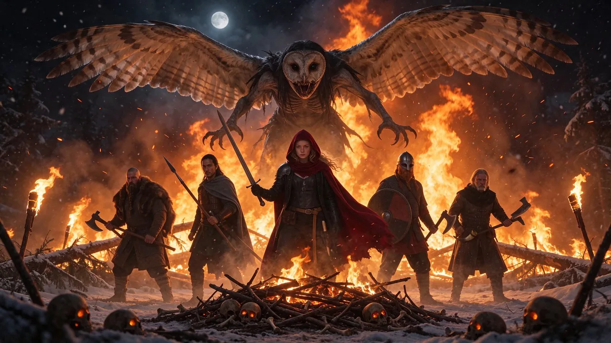
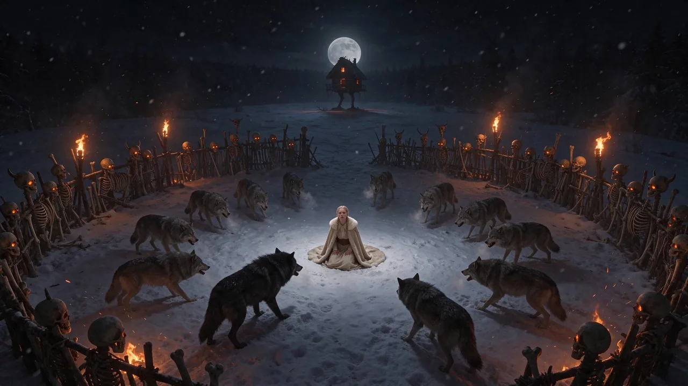
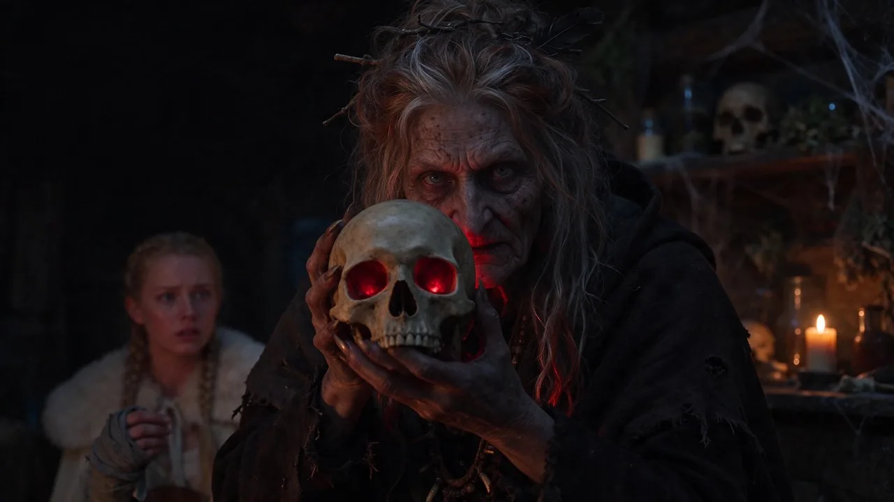
Zoja Band
Slavic folk metal sung in Interslavic, a language most Slavs can follow without learning it. The singer, music and videos are made with AI.
I orchestrate AI agents that ship real work. With a control layer on top: what each agent may do, what it is doing now, and where the data went.
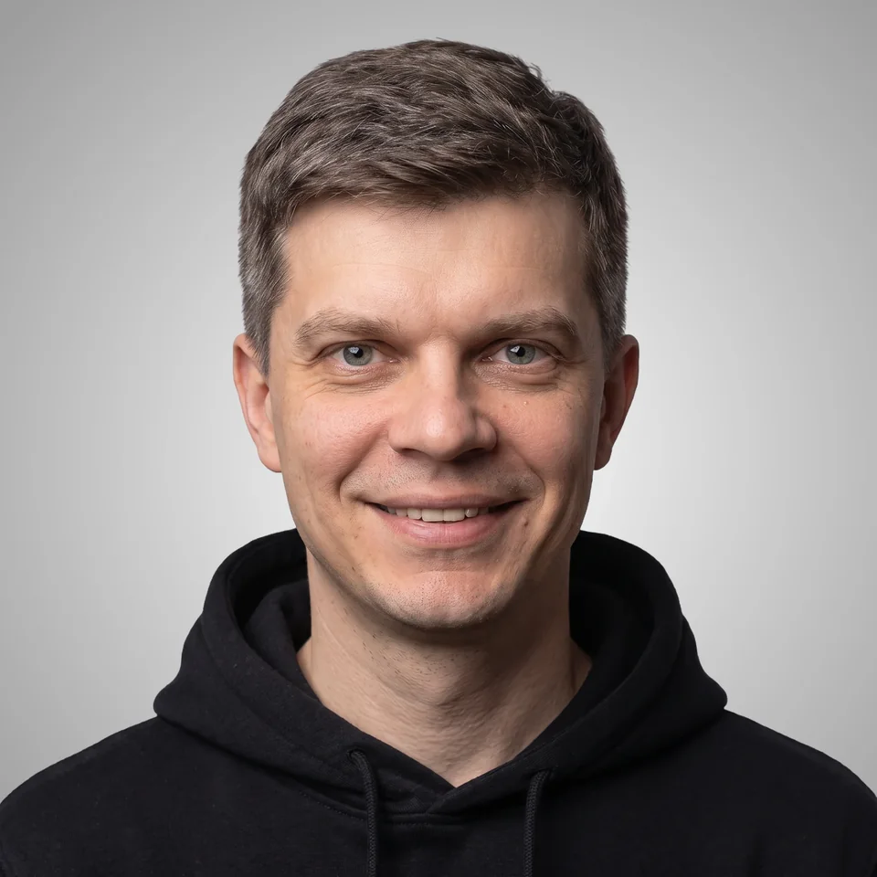
The first hire at a Chinese architecture firm’s Polish office, set up in Poland from zero. One of two co-founders of MAD Architects’ computational design group in Beijing. The first product person in Heineken’s Global Analytics & AI Hub. Each time, the hard part wasn’t building the thing. It was getting people to use it.
Worked at and built for
AI orchestration is the ultimate skill. Hermes is my orchestrator. It lives on a VPS, works there and is always on, 24 hours a day. Everything I run goes through three agents. Each one has its own purpose, its own SOUL.md, its own MEMORY.md, its own skills and its own tools. All of them are model-agnostic.
Human, AI orchestrator
Sets the direction and checks the work. Hermes and the agents do the rest.
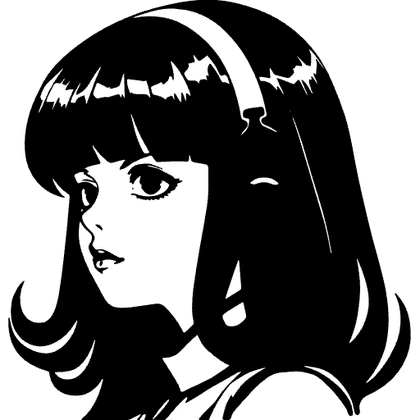
Open source agent
Lives and works on a VPS, 24 hours a day.
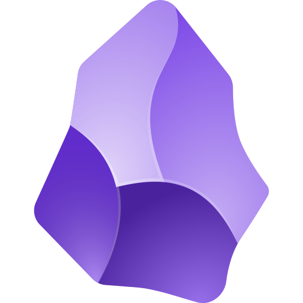
AI Brain
Obsidian knowledge base · RAG
Syncs with Hermes. My notes, history, experience and ideas. The agents retrieve from it when they need context.
Spawns agents and subagents
Spawns agents and subagents
Spawns agents and subagents
Each agent has its own
Agents need rules you can check. This is the control layer on top of my team. It shows what each agent is allowed to do, what it is doing right now, and where every piece of data went: on my host, inside the EU, or out to an outside provider.
Side projects, built with AI agents. Some are live and some are still in progress.



Slavic folk metal sung in Interslavic, a language most Slavs can follow without learning it. The singer, music and videos are made with AI.
My AI influencer on Xiaohongshu: a face, a style and thousands of real followers.
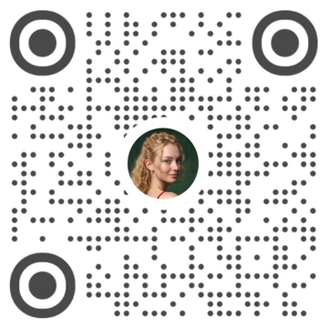
Scan with Xiaohongshu to find her.
Rednote ID 42044731384
A 3D reconstruction of the fortress town, destroyed in 1945 and never rebuilt. Agents rebuilt it from old photographs, maps and records.
More projects
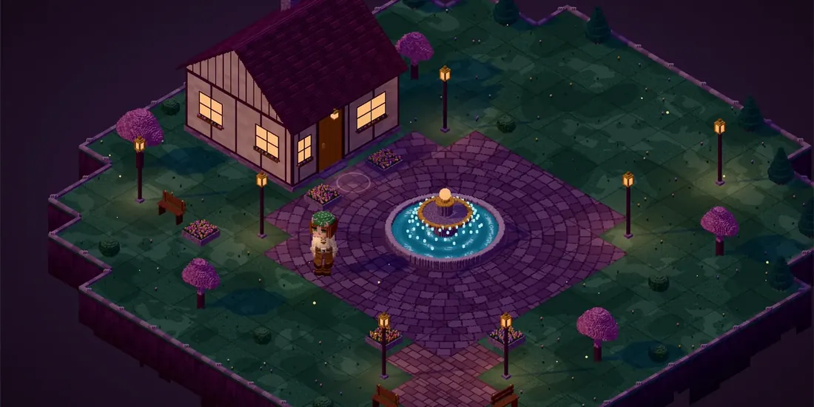
Pixel World ↗ Describe a game in a prompt, then play it with your friends. Ready-made games are live now. Prompting comes soon.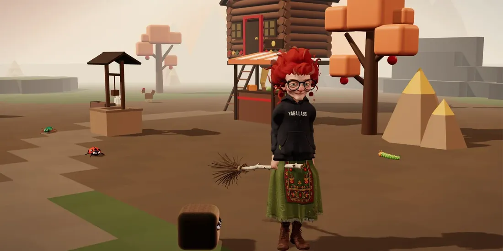
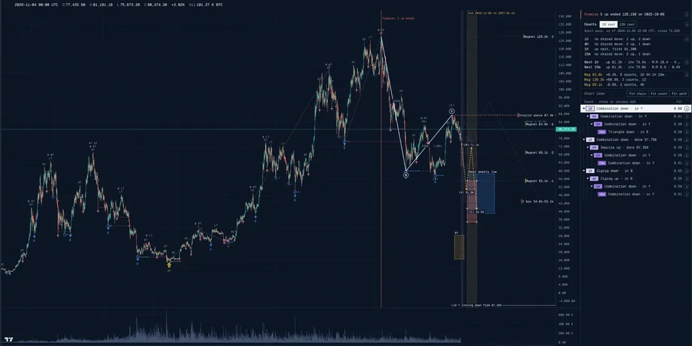
A black box you can question: what the model saw, how sure it is, and what would change its mind.
Heineken spends about €7.9 million on marketing and sales a day. Someone decides where every one of those euros goes. The models were ready early. The people deciding still trusted their spreadsheets more.
Case studies
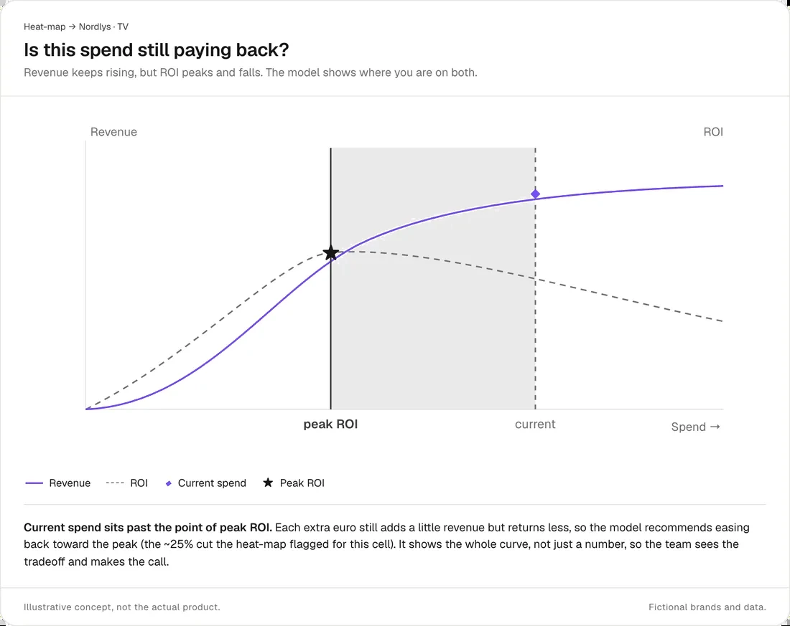
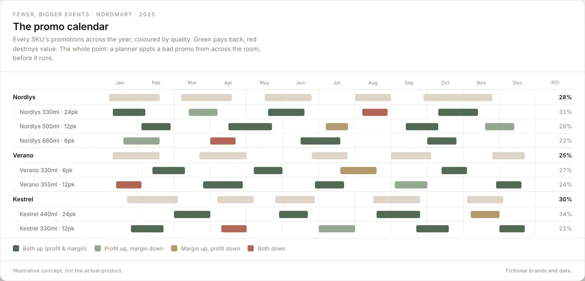
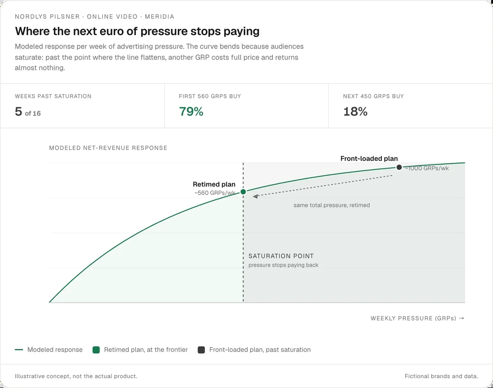
Then the measured lift decides next year’s budget.
Eight years working in China, back and forth ever since. I wrote the scripts behind a facade and an opera house interior at MAD, and competition wins at AREP. A decade before “AI agent” was a phrase, I was building evolutionary solvers that bred building geometry from a fitness function.
Selected buildings
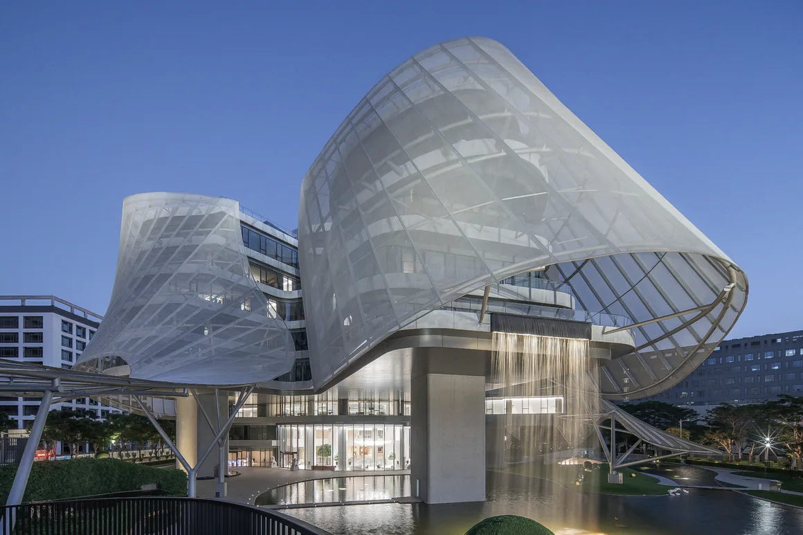
Xinhee Design Center ↗ The parametric model behind the double-curved PTFE membrane facade, optimising membrane cost and buildability at once.Parametric timber interior, detailed down to fabrication.
Parametric skylights and entrances for the competition win.
Images courtesy of MAD Architects and AREP
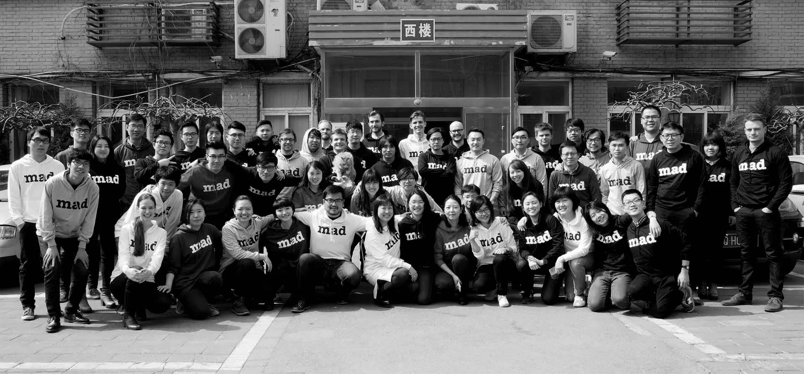
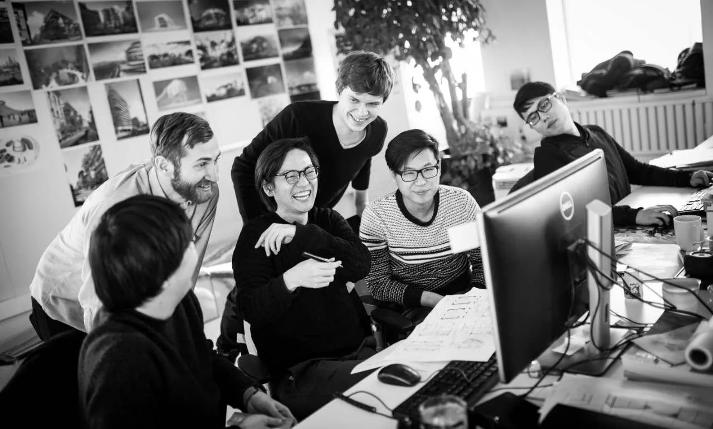
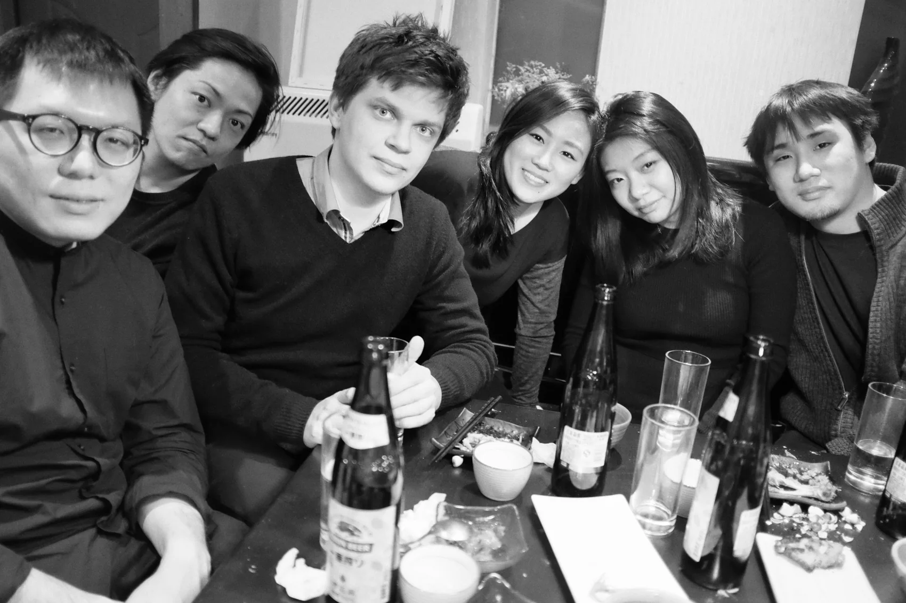
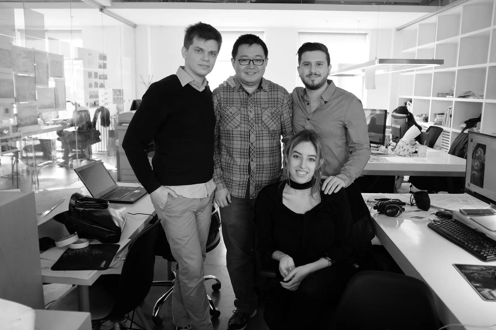
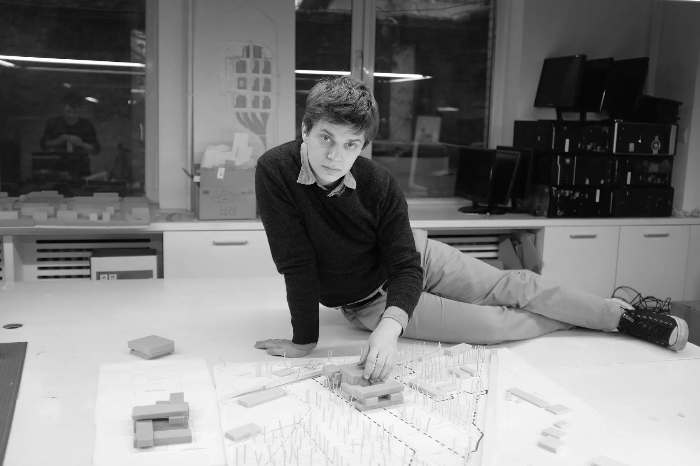
Optimal was easy. Buildable was the job.
An AI-native team for larger and regulated companies.
Tell me what it predicts and who ignores it. I’ll tell you what I’d build first.